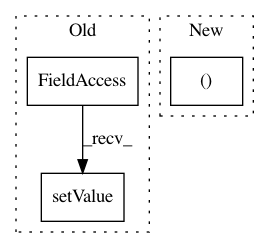

993fcea2466ef5acd549ed949f1843432a010680,ilastik/workflows/objectClassification/objectClassificationWorkflow.py,ObjectClassificationWorkflowGraphcut,connectInputs,#ObjectClassificationWorkflowGraphcut#Any#,673
Before Change
op5raw = OpReorderAxes(parent=self)
op5raw.AxisOrder.setValue("txyzc")
op5predictions = OpReorderAxes(parent=self)
op5predictions.AxisOrder.setValue("txyzc")
if self.fillMissing != "none":
opFillMissingSlices = self.fillMissingSlicesApplet.topLevelOperator.getLane(laneIndex)
opFillMissingSlices.Input.connect(opData.ImageGroup[0])
After Change
opGraphCut = self.segmentationApplet.topLevelOperator.getLane(laneIndex)
opData = self.dataSelectionApplet.topLevelOperator.getLane(laneIndex)
rawSlot, binarySlot = super(ObjectClassificationWorkflowGraphcut,
self).connectInputs(laneIndex)
opGraphCut.RawInput.connect(rawSlot)
In pattern: SUPERPATTERN
Frequency: 5
Non-data size: 3
Instances
Project Name: ilastik/ilastik
Commit Name: 993fcea2466ef5acd549ed949f1843432a010680
Time: 2014-03-04
Author: webmaster@burgerdev.de
File Name: ilastik/workflows/objectClassification/objectClassificationWorkflow.py
Class Name: ObjectClassificationWorkflowGraphcut
Method Name: connectInputs
Project Name: ilastik/ilastik
Commit Name: cd28c0a9166ea8fe9cd92e6e9ca3c9aba6d15b71
Time: 2015-03-31
Author: kirkhamj@janelia.hhmi.org
File Name: tests/nanshe/preprocessing/testOpNansheWaveletTransform.py
Class Name: TestOpNansheWaveletTransform
Method Name: testBasic
Project Name: ilastik/ilastik
Commit Name: 3089ce522d4cb8661428bbbe8efa18a891dd96d3
Time: 2014-08-15
Author: bergs@janelia.hhmi.org
File Name: tests/testOpSubRegion.py
Class Name: TestOpSubRegion
Method Name: testDirtyPropagation
Project Name: ilastik/ilastik
Commit Name: d55c05ab387d1534f0e33da232229ee967ded450
Time: 2014-04-24
Author: webmaster@burgerdev.de
File Name: ilastik/applets/thresholdTwoLevels/_OpObjectsSegment.py
Class Name: OpObjectsSegment
Method Name: setupOutputs
Project Name: ilastik/ilastik
Commit Name: 3089ce522d4cb8661428bbbe8efa18a891dd96d3
Time: 2014-08-15
Author: bergs@janelia.hhmi.org
File Name: tests/testOpSubRegion.py
Class Name: TestOpSubRegion
Method Name: testOutput